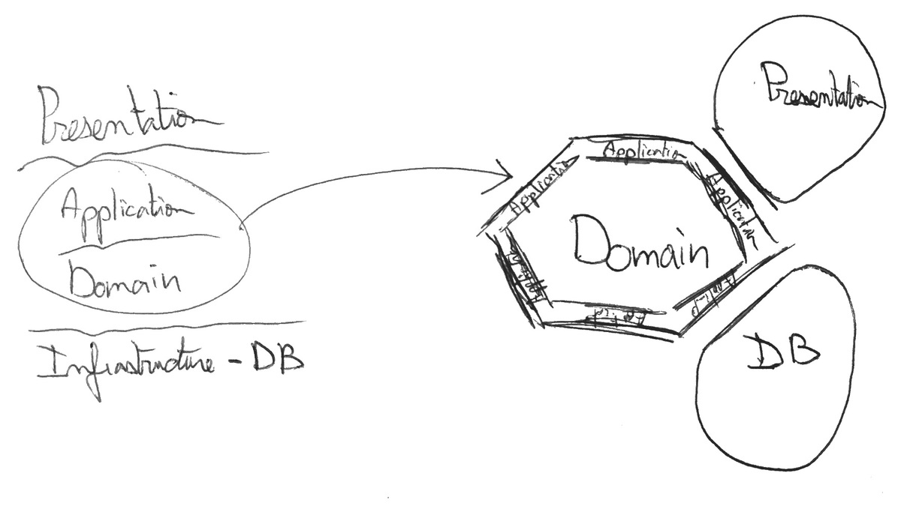
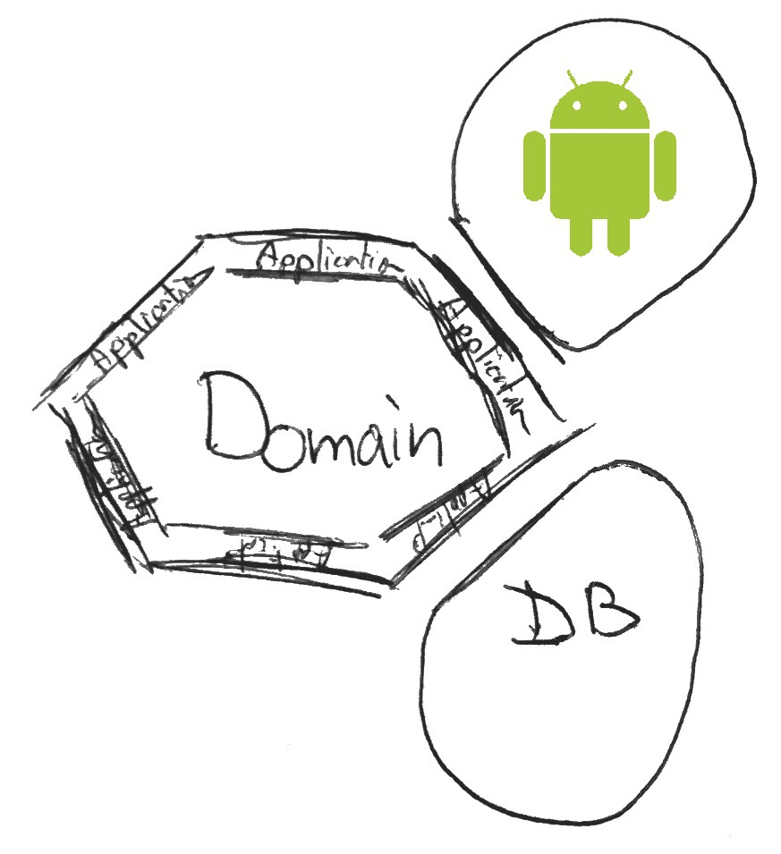

Hexagonal Android - Part 1: Intro
3 min read - May 14nd, 2016
Update
After month of research, study and trial and error, I finally have a much clearer vision on modular architectures. I invite you to discover the result of my research in the following article:
Feel free to continue reading this article, as it goes a bit more in-depth on certain aspects.
I used a slightly different, more refined vocabulary in the article about My Java Archetype. To make the transitions as easy as possible between the two articles, here are the equivalent definitions.
Hexagonal Series My Java Archetype Use-case Application Service Driving Adapter Application Service Port Contract (Interface layer) Driven Adatper Contract Implementation
“Testing on Android is Hard”, this seems to be a widespread idea. A lot of professional applications out there are not covered by tests. Even some of the samples from Google are not test covered. So what’s really up with android ? Why is it so difficult to test?
I mean is it really still difficult? Well the purpose of this blog not being answering questions but rather asking them, let’s ask ourselves this very question.
This post is part of a series of post where I try my best at implementing the Hexagonal Architecture in an Android application.
You can also check out the other parts:
The whole code for the application is available at:
This series is not meant to be a complete introduction to the Hexagonal architecture, for more information check these links :
- Alistair Cockburn’s original Hexagonal Architecture
- Fideloper’s talk on Hexagonal Architecture
- Uncle Bob’s Clean architecture
Moreover this project is very similar to the one of Fernando Cejas
How to make a highly testable Android Application?
What seems to be the consensus is that the android part is . . . tricky. For a multitude of reasons.
Valid or not, for now, let’s just not spend time trying to understand them.
Why not? Well if the android part really is the problem, there’s always the solution to . . . abstract it away.
By removing all the android dependencies from most parts of the application, it becomes incredibly easy to then have it covered by tests. I’m sure you start to see where I’m getting at.
Hexagonal Architecture
Aka Ports and adapters, is a simple way to organize software that enables a separation of responsibilities. If you’ve heard of the Onion Architecture or the Clean Architecture, they are basically the same idea. Same also goes for all layered architectures, the only difference being that the central layer is now the center of the circle/hexagon and the external layers are hexagon “modules”.

This article is not intended to be a complete introduction to the hexagonal architecture, for that I’d recommend:
- Alistair Cockburn’s original Hexagonal Architecture
- Fideloper’s talk on Hexagonal Architecture
- Uncle Bob’s Clean architecture
Back to our main topic, in our case, the UI part is the Android part.

What this means is that we have a domain that is completely Android free. By Android free, I really mean the domain should be exempt of all android references, and actually any other references too. Ideally, the domain should be POJO only.
Tdd on the Domain
So we did it!
At least partly. With a domain now free of Android dependencies. It is now really easy to test our android application. It’s basically a simple java app now. And for that, there are tons of testing techniques available. You know what to do now ;)
I personally prefer to develop tests first. To know why, or to simply discover TDD, check out this article.
The Android Part
So by separating concerns we got rid of most android dependencies in our application making it highly testable but . . . that’s not it.
Since it’s an android app we cannot entirely get rid of all android dependencies. In a later post, we’ll investigate together how to make the Android part more testable
Hint: It’s also about removing android dependencies ;)
Tic Tac Toe Project
That’s the basic idea: separation of concerns. Seems simple in theory, now let’s see how that turns out when trying to implement it.
During the following weeks, I will focus on implementing the Hexagonal Architecture in a TicTacToe android application.
The application in question is a simple tic tac toe game. You can check the code on Github.
I will first give you an overview of the architecture I used.
But the main focus after that will not be about describing the best practices when implementing the Hexagonal Architecture on Android, but rather exposing the problems I encountered, the solutions I picked and the underlying reasons I chose these specific solutions. This will be under the form of Open Articles
This is only an introduction but if you have any comments or questions, I would love to see your reactions in the section below.
— The Professional Beginner